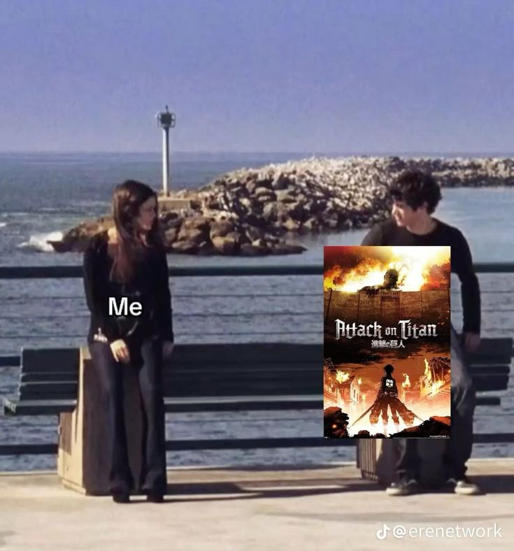
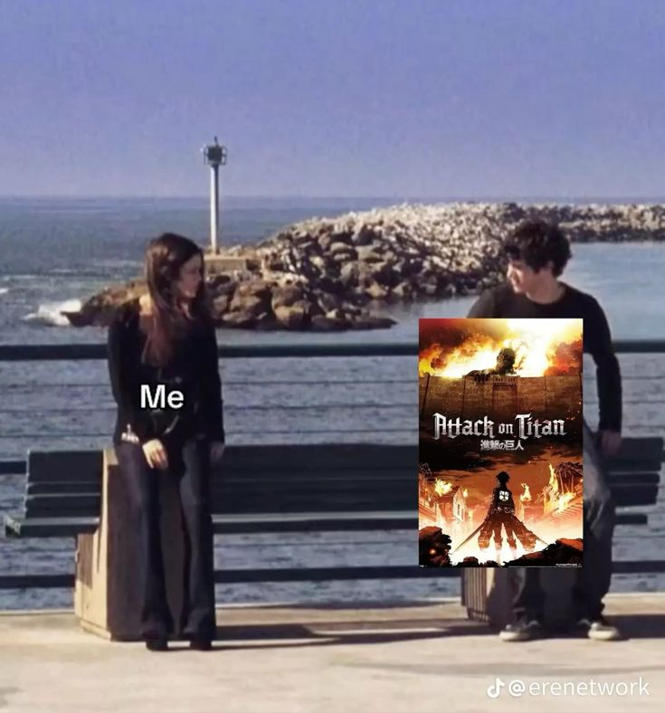

AOT (eher Eren Jaeger)
Eren Jeager was never just a soldier — he was a storm.
Born behind walls, he refused to accept a life in a cage. Every breath he took burned with one word: freedom. From the moment he saw the Titans, he swore to destroy them all — not out of hatred alone, but out of a desperate need to break the chains that bound humanity.
As he grew stronger, his idea of freedom twisted, blurred between savior and monster. Eren didn’t just want to escape the walls — he wanted to tear down the world that built them.
In the end, he became the embodiment of freedom itself: beautiful, terrifying, and unstoppable.
 
